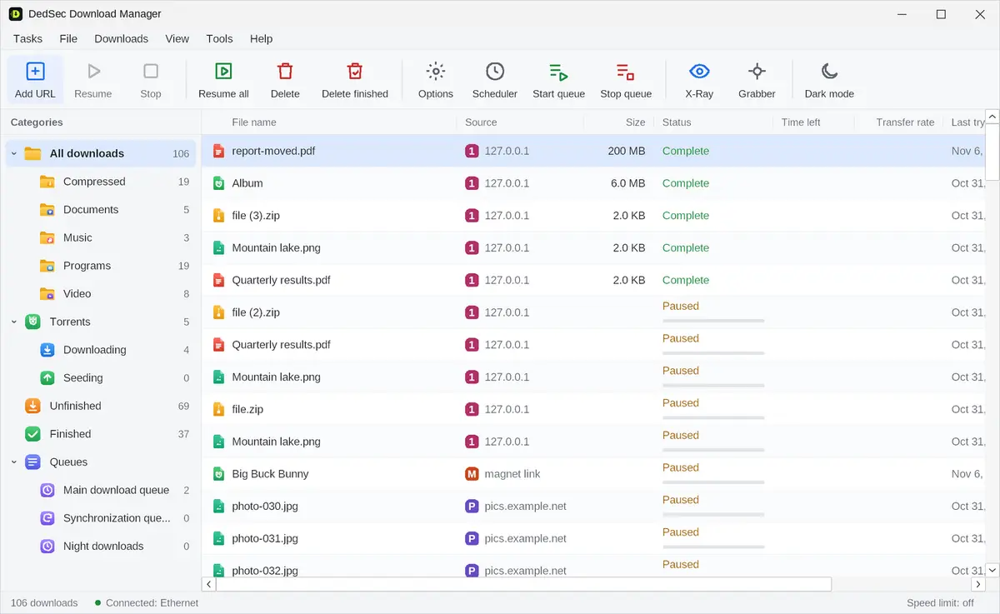
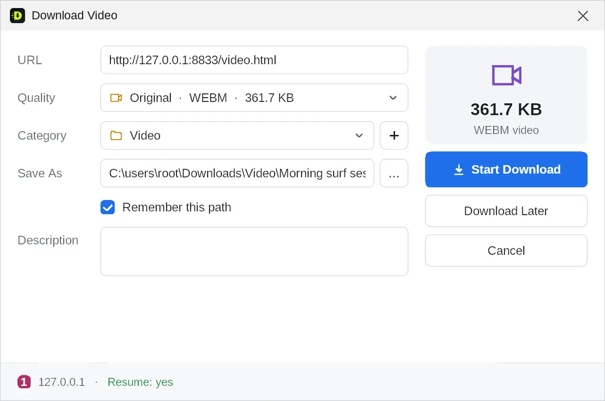
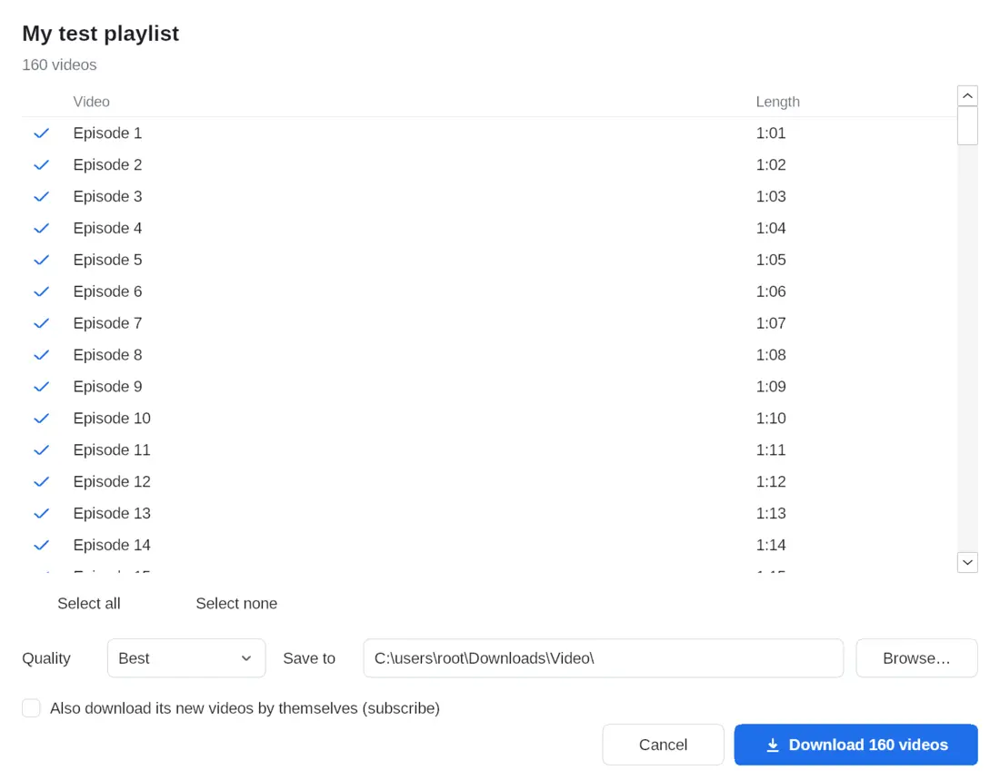
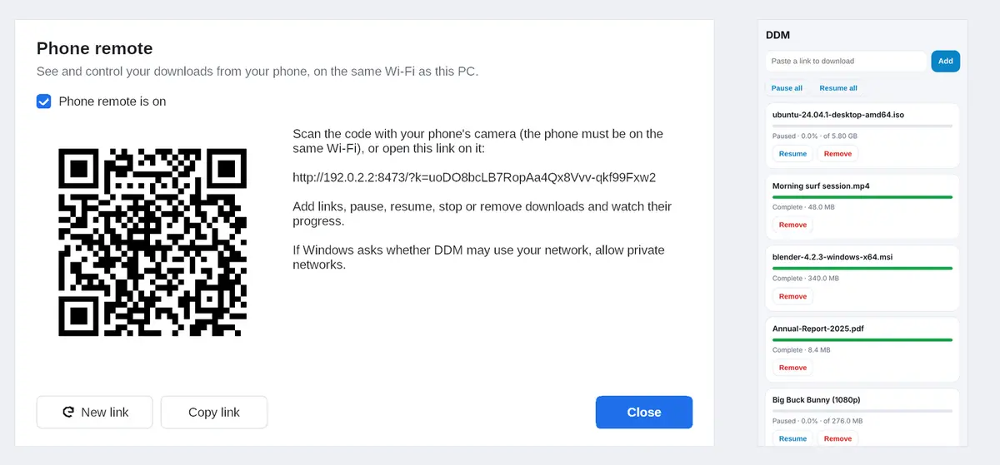
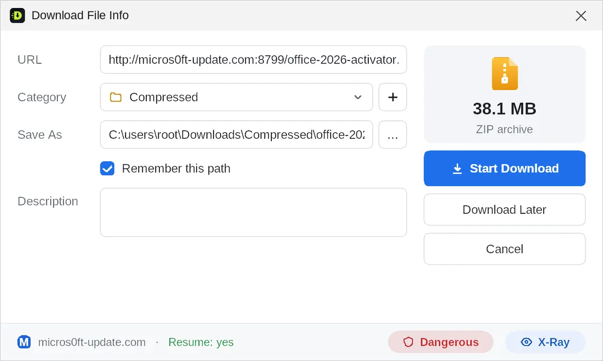

Up to 32 connections per file. Videos and playlists from YouTube, TikTok, Facebook, Instagram and more. Torrents, MEGA, and a phone remote. Every link checked before it reaches your PC. A modern IDM alternative built in pure C++.

Up to 32 connections per file and all your internet connections at once. Resumes after crashes, restarts and even expired links.
YouTube, TikTok, Facebook, Instagram, Reels, Bilibili, X, Vimeo, Dailymotion, Reddit, Snapchat and more, from 144p to 4K or as MP3. HLS and DASH streams too.
English, বাংলা, हिन्दी, اردو, العربية, Español, Français, Português and Bahasa Indonesia — every window and message, switched in one click.
A whole YouTube playlist or channel in one click. Subscribe, and new videos download by themselves.
Watch or listen before the file is finished. Jump ahead and that part is fetched first.
Scan a QR code to add, pause and resume downloads from your phone, on your own Wi-Fi only.
A built-in torrent client with magnet links, plus MEGA files and folders, all in the same list.
Look-alike sites, fake installers, disguised programs and malware lists are checked before you download. SHA-256 and an antivirus scan when it's done.
See what's inside a ZIP, RAR, 7z, ISO or program while it's still on the server, and download only what you need.
Compress video, convert to MP3, trim, make GIFs, compress pictures, remove image backgrounds and extract archives.


Paste a YouTube playlist or channel link. DDM lists every video, even in very long playlists. Choose what you want, pick the quality and folder, and subscribe so new videos arrive on their own.
Open Tools → Phone remote and scan the QR code. There's no app to install, and it works only inside your own network with a secret link.

Your antivirus looks at a file once it's already on your disk. DDM looks earlier. It checks for look-alike domains (micros0ft-…, paypa1…), brand-new sites, public malware lists, programs disguised as videos or PDFs, and bait names like “crack”. Then it hands the finished file to your antivirus.

| Speed | Up to 32 connections per file, plus Wi-Fi + Ethernet + phone hotspot together |
|---|---|
| Resume | After crashes, restarts and sleep, and even when the link expired |
| Videos | YouTube, TikTok, Facebook, Instagram, X, Vimeo and more, in every quality or MP3 |
| Playlists | Whole playlists and channels, and subscriptions |
| Torrents & MEGA | Built in, so you don't need a second program |
| Security | Link and file checks before downloading, X-Ray, SHA-256, antivirus scan |
| Built with | Pure native C++, one small program that uses almost no memory |
| Price | Free for everyone, every feature, no sign-up, no ads |
| Source code | Open source under the GPL-3.0, on GitHub |
The add-on adds the Download this video button, sends your browser's downloads to DDM, and puts Download all links, Download all images and Save page as PDF in the right-click menu. DDM's setup offers it automatically.
DDM covers what people use Internet Download Manager for (multi-connection downloads, resume, browser integration, a video button and a scheduler) and adds torrents, MEGA, playlists, a phone remote and security checks before every download. It is free and open source.
Install DDM and its browser add-on, open the video and click Download this video. For a whole playlist or channel, paste its link into DDM.
Yes. Point at the video and click Download this video. Each video is saved under its own caption or title.
Pure native C++ for Windows. There's no .NET, Java, Electron or Python, so it starts instantly and stays light.
Windows 11, 10, 8.1, 8 and 7 SP1, 32-bit and 64-bit.